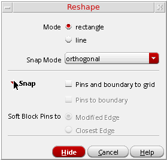
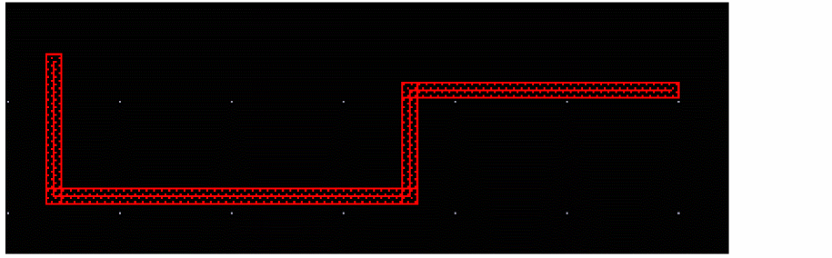
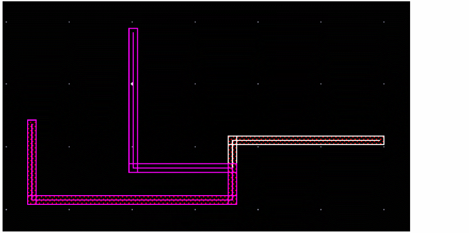
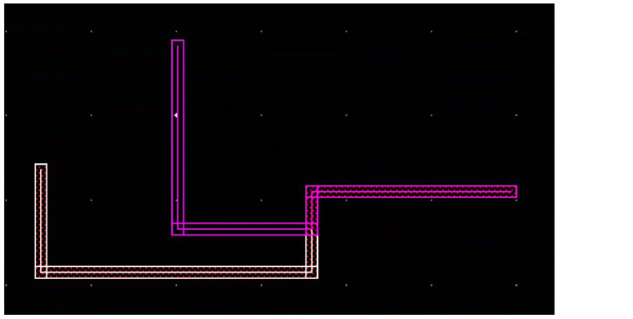
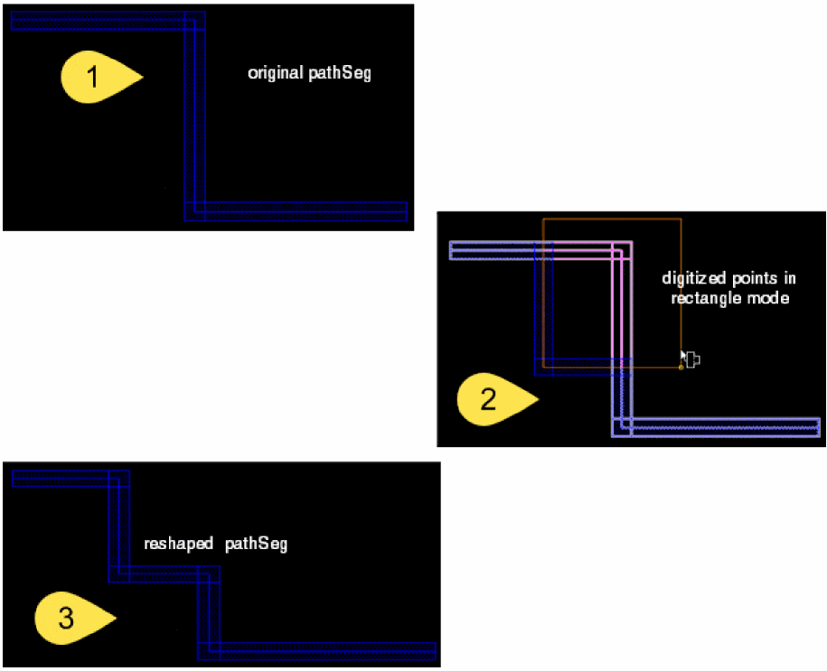
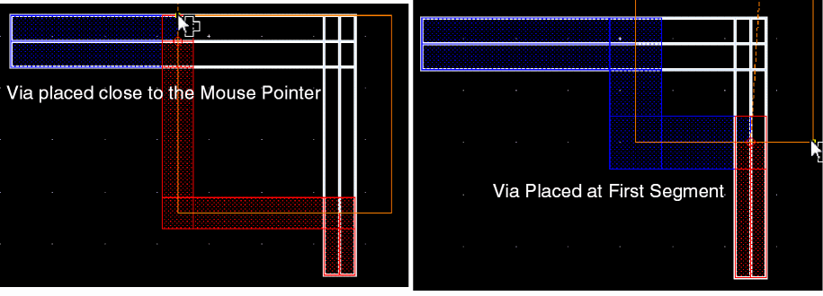
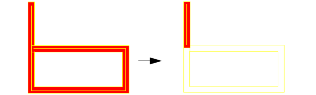
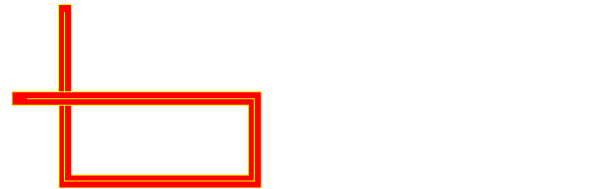

8
Editing Routed Connections
This chapter describes the following topics.
- Stretching Wires and Vias
- Moving Wires
- Copying Wires
- Re-routing a Wire
- Reshaping Wires
- Removing Loops From Wires
- Merging Wires
- Self-intersecting Objects
- Deleting Wires
Stretching Wires and Vias
If you stretch segments or vias, DRD-Enforce with Push works on prerouted paths and segments. Prerouted paths everywhere in the design, not just those pushed, are split at t-junctions and vias to conform to the routing connectivity model. New paths introduced by split are written as segments. As a result, some parts of prerouted paths are converted to segments.
If you stretch other object types such as paths, rectangles, polygons, MPPs, Pcells, etc., DRD-Enforce with Push does not work.
- Variables that Control Stretch
- Controlling the Angle of Wires
- Using the Stretch Command
- Preserving Paths
- Stretching Wires Connected to Pins
- Stretching Wires Connected to Vias
- Stretching Wires Across Tracks (ICADVM20.1 Only)
Variables that Control Stretch
-
Keep Connected option
The Keep Connected option on the Stretch form will allow wires that are stretched to remain connected. See Stretch Form. -
Angles of segments
Often determines when an extra segment is needed. See Controlling the Angle of Wires. -
Selection of objects
Selecting one vertex in a segment leaves the other vertex alone. Selecting both vertices in a segment causes the segment to move.
The length of attached segments may change to keep them connected or additional segments may be added to keep them connected.
Selecting a via may cause the addition of a segment.
See Wire Objects for more information. -
Constraint-aware editing (ICADVM20.1 Only)
The Constraint-aware editing option on the Configure tab of the Connectivity form allows you to perform the initial constraint checks. This is recommended for the interactive routing commands to improve the runtime and also the use model.
Controlling the Angle of Wires
To control the angle of wires during stretch, turn Lock Angles on to preserve the angle of existing objects during stretch. See Stretch Form for more information. Set the Snap Mode to Orthogonal or Diagonal, to control the permitted angles of wire objects being added.
Using the Stretch Command
The Stretch command can be used to stretch diagonal edges, intersecting wires, and pathSegs or paths by changing the vertices XY locations. When an isolated fully selected via, pathSeg, or path is stretched, the object is moved to a new location similar to using the Move command.
-
Choose Edit – Stretch.
The layout window prompts you to select a figure to be stretched. Press F3 to open the Stretch form. -
Select the desired Snap Mode.
Snap Mode will enforce restrictions on the movement of the pointer. For example, if one end of a diagonal segment in a wire is stretched when the snap mode is horizontal, that end will move only horizontally. -
(Optional) Select Keep Wires Connected to.
The Keep Wires Connected is selecteds oto maintain the pathSeg-to-pathSeg and pathSeg-to-via connections during stretch. You can select one of the following options.- Spine wires only maintains connections to spine wires but not to connecting vias when stretching a wire. This option is selected by default.
- All wires and vias maintains pathSeg-to-pathSeg and pathSeg-to-via connections during stretch. When this option is selected, the Lock Unselected Vias option is enabled. Selecting the Lock Unselected Vias option, locks the unselected vias and does not allow you to change the position of the via.
- No wires and vias does not maintain pathSeg-to-pathSeg and pathSeg-to-via connections during stretch.
-
(Optional) Turn Lock Angles on to preserve the current angles of pathSegs and path elements.
Turn Lock Angles off to allow the angles to change. Path elements may be oriented to any angle, but pathSegs can only be orthogonal or diagonal. -
Click or area select the wire or portion of wire you want to stretch.
For more information about selection, see Wire Objects. -
Move the pointer and click to place the wire element.
The Stretch command does not keep overlapping wires connected if they are on different nets. In VLS L, overlapping wires on different nets are kept connected when stretched if their endpoints meet precisely.
If DRD is enabled, the placement of stretch wires is verified that the resulting geometry will follow the technology rules. This applies to via stacking as well. If DRD is not enabled, the Stretch command will allow vias (as well as other objects) to be moved to any location.
You can stretch a bus or multiple wires whose bit spacing is less than minSpacing, but minSpacing markers are generated while dragging the pointer, even if DRD is not enabled.
In the Layout L editor, logical connectivity (nets) is not taken into account when stretching wires. When DRD is on, DRD can use net information to flag or avoid shorts.
Preserving Paths
When wires are created using paths, the stretch command will preserve the path objects and not split the paths into separate paths when ever possible. However, there are cases when it is necessary to split path objects. The following examples show situations where paths will be split due to stretching of the paths.
Stretching Wires Connected to Pins
When a wire connects to a pin, the end of the wire is considered to be fixed. To disconnect a wire from a pin, turn Stretch – Keep Connected off. This will release the end of the wire and allow you to disconnect from the pin while stretching the wire.
When a segment that is attached to a non-wire object such as a pin, and the pin is not also being stretched, a segment is added from the end of the stretched segment back to the original connection point in the pin only if it is necessary to maintain connectivity.
Stretching Wires Connected to Vias
Wires will remain connected to vias when the Stretch – Keep Connected option is on, whether it is a single via or a stack of vias. To move individual vias in a stack you must use the Move command.
When stretching a via attached to a pathSeg, the pathSeg is also stretched and the endStyle of the pathSeg at the overlap with via is recomputed. This may result in the end styles of pathSegs being changed.
Stretching Wires Across Tracks (ICADVM20.1 Only)
The Stretch command has been enhanced to support width-based track patterns as well as width spacing patterns.
When you stretch a wire across tracks, the width of the wire is adjusted to the width of the track pattern to which it is stretched. For example, the global region has stdCell pattern, which has different width on different tracks. The figure below shows that when a wire is stretched, the width of the wire is adjusted to the width of the track pattern to which it is stretched.
In this case, the wire is stretched without maintaining the pathSeg-to-pathSeg and pathSeg-to-via connections. This is because the No wires and vias option is selected from the Keep Wires Connected To drop-down list in the Stretch form. The Stretch form is displayed when you start the Stretch command and press F3.
You can also stretch a wire by maintaining its pathSeg-to-pathSeg and pathSeg-to-via connections. To stretch a wire while maintaining its connectivity, select the All wires and vias option from the Keep Wires Connected To drop-down list in the Stretch form.
The following figure shows that when a wire is stretched while maintaining its connectivity, the width of the wire is adjusted to the width of the track pattern to which it is stretched. Additionally, the connectivity of the wire, such as the via placed on a wire, is also accordingly adjusted.
Moving Wires
Fully selected wires or wire elements can be moved by the Move command. Wires can also be rotated, reflected, or changed to a different layer by using Move form. For more information, see
Copying Wires
Fully selected wires or wire elements can be copied by the Copy command. Wires can also be rotated, reflected, or changed to a different layer by using Copy form.
Currently the net information is discarded when copying wires.
Re-routing a Wire
A re-route is a type of wire editing where a new wire is started from a point along an existing wire, and eventually reconnects to another portion of the existing wire. The portion of the original wire made redundant by the new wire is removed.
Reshaping Wires
Using the Reshape command, you can reshape the list of selected pathSegs and vias. You can also choose the selected part of a wire to be reshaped.
To reshape a wire, follow these steps:
- Choose the type of Routing Object Granularity from the Options – Selection form.
- Select the wire to be reshaped.
-
Select Edit – Advanced – Reshape. The Reshape form is displayed. By default, rectangle mode is selected.
 -
To reshape a wire in line mode, perform the following steps.
- Click Mode: line.
- Click a segment of an existing wire to select the wire.
- The existing wire is automatically tapped for layer information and attributes.
-
The initial starting point is the first point of the wire to be reshaped. The initial point is snapped to the begin/end points, center-line of a segment, or to the origin of a via:
- When you select the Reshape command, all the other pathSegs or wires in the same route as the selected pathSegs or wire are also selected.
- Digitize points where you want to create a wire and double click.
-
This will highlight the option of the new wiring.
-
Middle click toggles between wire reshape options. 
- Press Return or double click to finish the desired reshape of the wire.
-
To reshape a pathSeg in the rectangle mode, perform the following steps.
- Select the wire to be reshaped.
- Select Edit – Advanced – Reshape. The rectangle mode is selected by default.
- Click a segment of an existing wire to select the wire.
-
Digitize points where you want to create a wire and double click.
-
Press Return or double click to finish the desired reshape of the wire.
In addition, while reshaping a wire in a rectangle mode, if the two intersection points of selected wires are on different layers then reshape command will keep the connectivity by repositioning the vias in between them. The vias of the reshaped wire are either placed close to the mouse pointer or at the first segment as shown in the following figure.
Removing Loops From Wires
The option Allow Loops is supported in Virtuoso Layout Suite.
By default, loops are removed from wires created as pathSegs. When creating or editing a wire, a preview of the intended wire is shown. Once the intended wire segment attempts to produce a loop, the resulting loop is removed. When editing a wire which contains a loop, the entire wire may be removed due to loop removal.
You can allow loops in pathSegs by turning on Allow Loops in the Layout Editor Options form. The following commands and options support loop removal.
The following graphics show the loop removal when creating wire using pathSegs.
|

|
|
|
If the intended wire segment attempts to produce a loop, when Allow Loops on, the loop is allowed. |

|
With Allow Loops on, loops are allowed in the following circumstances.
Merging Wires
The following types of conditions are supported by the Merge command. Only wires on the same layer can be merged. Merging at segment ends which have a via is not allowed.
Collinear Abutment or Overlap of PathSegs
Collinear abutment of pathSegs is when two pathSegs meet end to end in a straight line at the same end point. Collinear overlap of pathSegs is when two pathSegs overlap in a straight line.
When two collinear pathSegs are merged, the elements are converted one continuous pathSeg. The resultant pathSeg will have the same end styles as the respective ends before merging.
Coincident Abutment or Overlap
Coincident abutment of pathSegs is when two pathSegs meet at an angle, or in at a T junction. Coincident overlap of pathSegs is when two pathSegs overlap at an angle.
Elements are converted to a path or polygon depending on overlap and end styles of pathSegs.
The following table lists the combinations of end styles possible by merging pathSegs that abut or overlap at an angle. Also stated is the situations in which merging the pathSegs results in a polygon.
Examples of Coincident Overlap
Merging a Pathseg with a Path
Merging a pathSeg with a path may result in either a path or a polygon.
The following table describes the combinations of path styles possible by merging a pathSeg and a path. Also described is the situations in which merging a path and pathSeg result in a polygon.
Example of Merging Paths and PathSegs
Self-intersecting Objects
A single database object is not allowed to intersect itself. Paths are shaped based objects represented by a point array and are not allowed to become self-intersecting during creation or editing.
When an object is self-intersecting, an error message dialog box appears and the object is not allowed to be drawn.
A single pathSeg consist of a two-point segment and cannot be drawn in a manner that would allow self-intersection.
When creating or editing wires using paths, the edges of a path can be coincident, but not overlap. When creating or editing wires using pathSegs, a series of pathSegs can be stretched to cross over other pathSegs or overlap.
By default, in the cases where the pathSegs would create a loop, the loops are removed. See Removing Loops From Wires for more information.
The following image shows how a u-shaped path is not allowed to be stretched over itself and self-intersect.
When the same u-shape wiring is created with multiple pathSegs, the segments of the pathSegs are allowed to be stretched to cross over each other or overlap.
Deleting Wires
The Delete command can be used to delete an entire wire when the wire is fully selected.
Wires that are created on the same layer using path elements are created as a continuous path, without intersecting vertices at corners. When deleting wires created with path elements, sections of the wire on the same layer can be deleted without breaks or gaps being created.
Wires that are created on the same layer using pathSegs as wire elements are created with intersecting vertices at corners. When deleting wires created with pathSegs as wire elements, selected sections can be removed, breaking the wire into multiple wires if interior pathSegs are removed.
Return to top